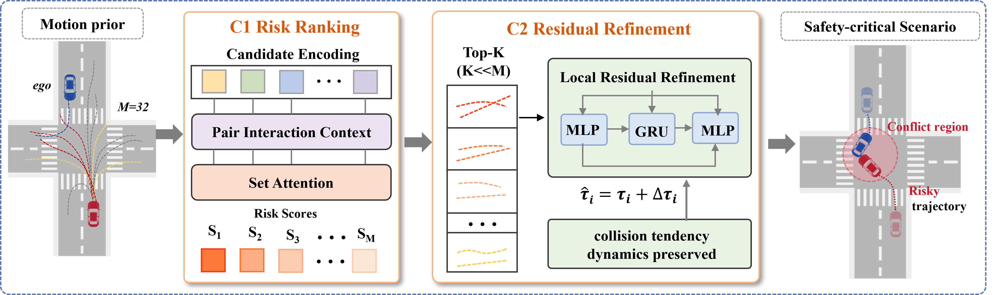
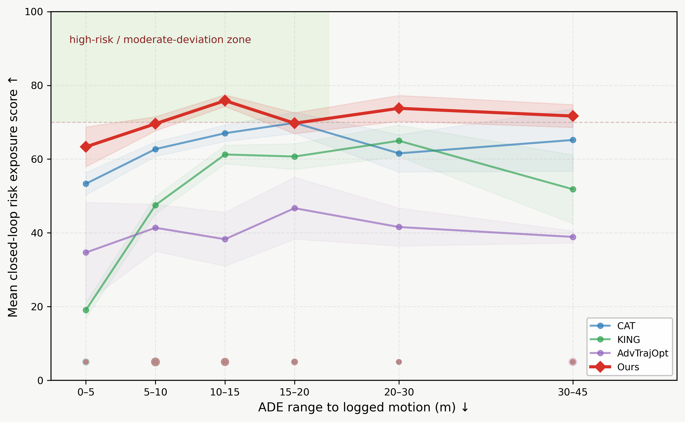
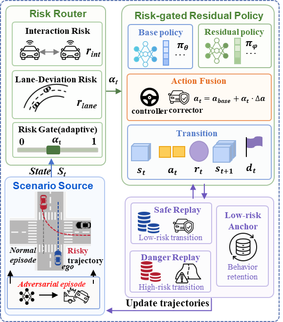

Project Page
DASH: Dynamic Adversarial Scenario Generation with High-Risk Resampling from Policy Feedback for Closed-Loop Driving Training
Southeast University | The University of Hong Kong | University of Michigan | Chery Automobile Co., Ltd.
DASH converts multimodal motion-prior futures into policy-relevant stress cases through learned ranking and bounded local refinement, then trains a risk-gated residual driving policy that preserves nominal capability while responding to high-risk interactions.
Overview
Autonomous-driving policies must stay reliable in nominal traffic while still responding correctly to rare close interactions. DASH addresses this by coupling adversarial scenario generation with risk-conditioned policy learning in one closed-loop framework.
Policy-aligned stress
Candidate futures are ranked by interaction risk, so generated scenarios stay relevant to the current driving policy rather than maximizing collision only.
Bounded local refinement
DASH edits trajectories locally around plausible motion-prior modes, improving stress while keeping the scenario interpretable and close to the original scene.
Risk-gated residual control
A base actor maintains nominal driving, while a residual branch is activated only when online interaction risk rises.
Abstract
Autonomous-driving policies must remain reliable in nominal traffic while recovering from rare close interactions, yet such long-tail failures are sparsely represented in natural driving logs. DASH introduces a dynamic framework with high-risk resampling from policy feedback for closed-loop driving training. It searches a multimodal motion-prior candidate bank, ranks future trajectories by learned interaction risk, and applies bounded residual edits to create interpretable stress cases. On the policy side, a base actor preserves nominal driving, while an online risk gate activates residual corrective control only as local interaction risk rises. Experiments show that DASH improves both stress generation and policy robustness across nominal, adversarial, and mixed evaluation suites.
Method
DASH follows a simple pipeline: generate multimodal candidate futures, rank them by risk relevance, refine locally under bounded edits, and train a risk-gated residual driving policy in closed loop.

Results
The key evidence is summarized below using compact tables and two representative result figures.
collision exposure under the shared simulator protocol
Top-1 recovery of proxy-oracle coverage
success rate with risk-conditioned TD3
Scenario generation comparison
| Method | Collision ↑ | TTC<2.5s ↑ | Off-lane ↓ |
|---|---|---|---|
| DASH | 81.43 | 37.07 | 10.63 |
| CAT | 71.86 | 26.62 | 6.01 |
| KING | 53.72 | 34.23 | 8.41 |
| AdvTrajOpt | 41.96 | 25.87 | 48.93 |
Policy evaluation
| Suite | Nominal TD3 | 50% adv. TD3 | Risk-cond. |
|---|---|---|---|
| Nominal | 50.6 / 69.06 | 52.8 / 74.35 | 63.0 / 80.44 |
| Adversarial | 23.4 / 53.52 | 30.8 / 61.23 | 36.2 / 64.83 |
| Mixed-50 | 38.0 / 61.61 | 42.2 / 67.28 | 50.0 / 72.90 |
Each entry is success rate / route completion (%).


Demos
Two paired examples are shown for scenario generation and two paired examples are shown for policy performance.
Scenario generation · Pair 1


Scenario generation · Pair 2


Policy training · Pair 1


Policy training · Pair 2